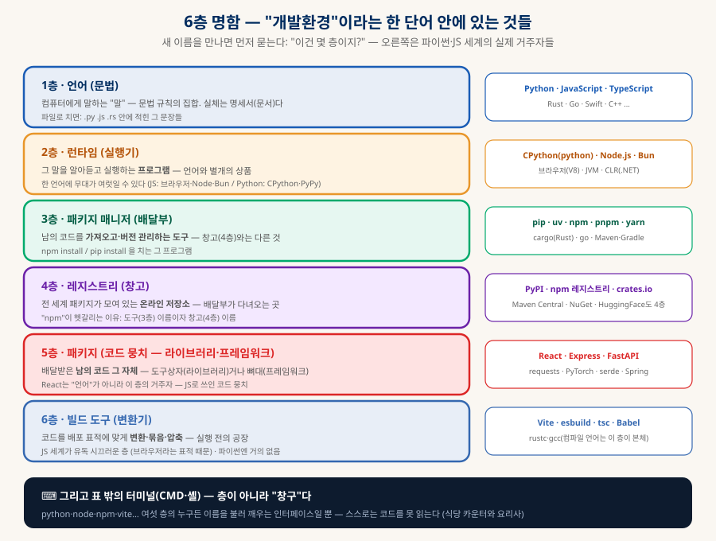
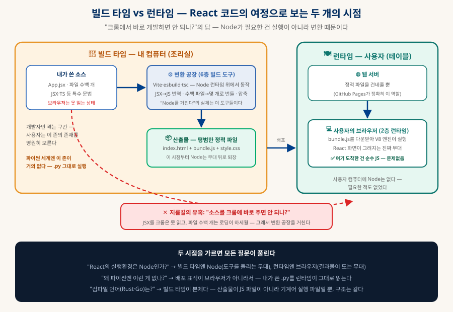
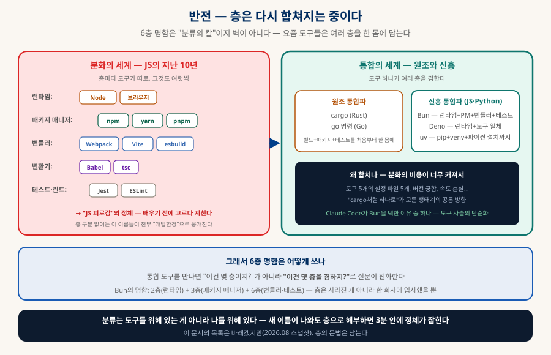

개발 생태계 해부
이름들이 사는 6개의 층 — node는 npm이 아니고, React는 언어가 아니다
Node, npm, pip, React, Vite, cargo, PyPI… 개발을 배우면 이름의 홍수를 만난다. 혼란의 원인은 이름이 많아서가 아니라 층을 가르는 칼이 없어서다. 언어·런타임·패키지 매니저· 레지스트리·패키지·빌드 도구라는 6층 명함 하나로, 이미 만난 이름들을 정리하고 앞으로 만날 이름들까지 3분 안에 분류하는 눈을 만든다.
0. 한눈에 보기 — 혼란의 세 뿌리
이름을 100개 외우는 것보다 뿌리 3개를 아는 것이 빠르다
① 이름의 다의성
Python은 언어 이름이자 실행기 이름이고, npm은 도구 이름이자 창고 이름이다. 한 이름이 여러 층에 걸치면 "언어 = 환경"같은 잘못된 등식이 생긴다 — 그 등식이 Node에서 깨질 때 혼란이 시작된다.
② 범주 미분화
"개발환경"이라는 한 단어 안에 실제로는 6개의 서로 다른 층(언어·런타임·패키지 매니저·레지스트리·패키지·빌드 도구)이 뭉쳐 있다 — 층을 가르면 이름들이 제자리를 찾는다(§2).
③ 시점 미분화
"개발할 때의 도구"와 "사용자가 돌릴 때의 실행"은 다른 세계다 — React에 Node가 필요한 건 실행이 아니라 변환(빌드) 때문. 빌드 타임과 런타임을 가르면 마지막 퍼즐이 풀린다(§5).
1. 왜 헷갈리나 — 어느 학습자의 실제 질문 사슬
부끄러운 질문이 아니다 — 전부 층 하나씩을 발견하는 정확한 관문이었다
아래는 한 학습자가 실제로 밟은 질문의 사슬이다(웹 개발을 처음 정리하는 사람이라면 거의 같은 길을 걷는다). 각 질문이 어느 층의 혼동이었는지를 나란히 붙이면, 이 문서 전체의 지도가 된다:
| 질문 | 혼동의 정체 | 발견한 층 |
|---|---|---|
| "node가 npm인 거 아냐?" | 실행기와 배달부를 한 몸으로 봄 (같이 설치되니까) | 2층(런타임) ≠ 3층(패키지 매니저) |
| "그럼 Python과 pip의 관계와 같은 건가?" | 혼동이 아니라 정확한 유추 — 두 생태계의 같은 층끼리 짝지은 것 (python↔node, pip↔npm, PyPI↔npm 레지스트리) | 층의 대응 관계 — 생태계가 달라도 층 구조는 같다, §3 지도의 씨앗 |
| "실행환경은 cmd나 터미널 아닌가?" | 창구와 요리사를 혼동 — 터미널은 이름을 불러줄 뿐 | 터미널은 층이 아니라 창구 |
| "파이썬 = 개발언어라고 생각했는데, 노드도 언어인가?" | 파이썬에서 배운 "언어 이름 = 실행기 이름" 등식이 JS에서 깨짐 | 1층(언어) ≠ 2층(런타임) — JS의 무대가 Node |
| "같은 언어를 다른 환경에서 실행할 수도 있나?" | 혼동이 아니라 정확한 추론 — 브라우저도 JS의 무대다 | 2층의 복수성 (§4-A) |
| "리액트는 언어야 뭐야?" | 유명하니 언어처럼 보이지만, JS로 쓰인 코드 뭉치 | 5층(패키지) — 라이브러리 |
| "리액트는 npm 뭉치라고 보면 되나?" | 정확 — 배포 단위 관점의 명중 | 5층은 4층(창고)에서 3층(배달부)으로 받는다 |
| "그럼 리액트의 실행환경은 node야?" | 반만 맞음 — 개발할 땐 Node, 실행은 브라우저 | 시점의 발견 — 빌드 타임 vs 런타임 (§5) |
| "애초에 크롬에서 바로 개발하면 되잖아?" | 10년 전엔 실제로 그랬다 — 규모·문법·보안이 변환 공장을 만들었다 | 6층(빌드 도구)의 존재 이유 (§4-C) |
2. 6층 명함 — "개발환경" 한 단어를 여섯 조각으로
새 이름을 만나면 먼저 묻는다: "이건 몇 층이지?"

| 층 | 정체 | 비유 (연극) |
|---|---|---|
| 1층 · 언어 | 문법 규칙 — 실체는 명세서(문서) | 대본을 쓰는 말 (한국어·영어) |
| 2층 · 런타임 | 그 말을 실행하는 프로그램 | 무대 — 같은 대본을 올릴 무대가 여럿일 수 있다 |
| 3층 · 패키지 매니저 | 남의 코드를 가져오고 버전 관리하는 도구 | 소품 배달부 |
| 4층 · 레지스트리 | 패키지가 모인 온라인 창고 | 소품 도매시장 |
| 5층 · 패키지 | 배달받은 코드 뭉치 — 라이브러리·프레임워크 | 소품 그 자체 (도구상자 or 무대 골조) |
| 6층 · 빌드 도구 | 코드를 배포 표적에 맞게 변환·묶음·압축 | 공연 전 리허설·무대 전환 팀 |
| (창구) 터미널 | 여섯 층 누구든 이름을 불러 깨우는 인터페이스 | 매표소 — 공연 자체는 아니다 |
3. 생태계 지도 — 8개 언어의 6층 채우기
파이썬·노드만이 아니다 — 층을 채우는 방식 자체가 언어마다 성격이다
| 언어 (1층) | 런타임 (2층) | 패키지 매니저 (3층) | 레지스트리 (4층) | 대표 패키지 (5층) | 빌드 도구 (6층) |
|---|---|---|---|---|---|
| JavaScript / TypeScript | 브라우저 · Node.js · Bun · Deno | npm · pnpm · yarn · bun | npm 레지스트리 | React · Express · Next.js | 가장 시끄러운 층 — Vite·esbuild·tsc·Babel |
| Python | CPython(python) · PyPy · MicroPython | pip · uv · poetry · conda | PyPI | requests · FastAPI · PyTorch | 일상 개발엔 불필요(.py 그대로 실행) · 배포 시 등장 — PyInstaller·Nuitka·py2app(앱 포장), Cython(속도), build/wheel(패키지 배포) |
| Rust | 없음 — 기계어로 컴파일 | cargo가 3·4·6층 통합 (창고는 crates.io) | serde · tokio | cargo build (rustc 내장 지휘) | |
| Go | 없음 — 기계어로 컴파일 | go 명령 하나로 통합 (모듈 프록시) | gin · cobra | go build — 크로스 컴파일이 한 줄 | |
| Java / Kotlin | JVM | Maven · Gradle | Maven Central | Spring | Maven·Gradle이 3층+6층 겸업 |
| C# / .NET | CLR(.NET 런타임) | NuGet | nuget.org | ASP.NET | dotnet CLI 통합 |
| Swift | 없음(컴파일) — 단 SDK가 OS에 묶임 | SwiftPM | (깃 저장소 직결) | Vapor · SwiftUI(SDK) | Xcode·swiftc — 맥에 묶인 6층 (NAS 문서의 그 이야기) |
| C / C++ | 없음 — 기계어로 컴파일 | 표준이 사실상 없음 — vcpkg·conan 후발 경쟁 | (파편화) | Boost · Qt | gcc·clang + CMake — 층이 없어서 생기는 무법지대 |
이 표에서 성격이 갈리는 지점 세 곳을 짚으면:
🦀 통합의 모범생 — Rust·Go
cargo와 go 명령은 패키지 관리·빌드·테스트를 처음부터 한 몸으로 설계했다. "도구 고르느라 지치는" 일이 없다 — §6에서 다룰 통합 흐름의 원조.
🌪 분화의 극단 — JS
층마다 도구가 여럿씩 경쟁한다(런타임 4종, 패키지 매니저 4종, 번들러 3종+). "JS 피로감"의 정체가 이것 — 층 구분 없이는 전부 "개발환경"으로 뭉개진다.
🕳 층의 부재 — C/C++
표준 패키지 매니저가 없어서 의존성 관리가 프로젝트마다 제각각인 무법지대. "층이 있는 게 얼마나 큰 축복인지"를 역으로 보여준다.
4. 층별 깊이 파기 — 헷갈림이 집중되는 세 층
2층(런타임)·3~4층(배달부와 창고)·6층(빌드)만 깊게 파면 나머지는 저절로 정리된다
A런타임 — 한 언어, 여러 무대
언어와 실행기가 별개의 상품이라는 것이 2층의 전부다. 그래서 한 언어에 무대가 여럿일 수 있다:
| 언어 | 무대 | 같은 언어인데 무엇이 다른가 |
|---|---|---|
| JavaScript | 브라우저 (크롬·사파리…) | 화면(document·alert)이 있음 · 보안상 내 파일에 손 못 댐 |
| Node.js | 화면이 없음 · 대신 파일·네트워크·서버 능력 (fs 등) | |
| Bun | Node 호환 + 패키지 매니저·번들러까지 내장한 통합형 (§6) | |
| Deno | 보안 기본값이 엄격한(권한 명시) 런타임 | |
| Python | CPython (표준 — python 명령의 실체) | "파이썬을 설치했다" = 사실 CPython이라는 구현체를 설치한 것 |
| PyPy | JIT로 수 배 빠른 대체 구현 — 같은 .py가 그대로 돈다 | |
| MicroPython | 마이크로컨트롤러(칩)용 초경량판 — 피지컬 AI 문서의 세계 |
B패키지 매니저(배달부)와 레지스트리(창고) — 그리고 격리
3층과 4층을 가르는 것부터: npm은 도구(3층)이자 창고(4층)의 이름이라 혼동의 단골이다. 정확히는 — 도구 npm CLI가, 창고 npmjs.com(레지스트리)에서, 패키지를 받아온다. 파이썬은 이름이 갈라져 있어 오히려 명확하다: 도구 pip가, 창고 PyPI에서 받아온다.
받아온 패키지를 어디에 두느냐가 다음 문제다. "프로젝트 A는 라이브러리 v1, B는 v2가 필요하다"는 충돌을 두 생태계가 다르게 푼다:
| JS — node_modules | Python — 가상환경(venv) | |
|---|---|---|
| 방식 | 프로젝트 폴더 안에 패키지를 통째로 설치 — 기본이 격리 | 프로젝트마다 "미니 파이썬 세계"를 만들어 그 안에 설치 |
| 장점 | 따로 켜고 끌 것 없음 — 폴더가 곧 격리 | 디스크 절약 · 파이썬 버전까지 격리 가능 |
| 대가 | 폴더가 거대해짐 ("우주에서 제일 무거운 물체" 밈) | 활성화(activate)를 잊으면 엉뚱한 곳에 설치되는 사고 |
| 재현성 장치 | package.json + lockfile | requirements.txt / pyproject.toml + lockfile(uv 등) |
C빌드 도구 — 왜 JS 세계만 이렇게 시끄럽나
§3 표에서 6층이 유독 요란한 곳이 JS다. 이유는 언어가 아니라 배포 표적이 특수해서다 — 결과물이 "내 컴퓨터에서 도는 프로그램"이 아니라 전 세계 불특정 사용자의 브라우저로 전송되는 파일이기 때문에:
① 번역이 필요하다
JSX(React 문법)·TypeScript를 브라우저는 못 읽는다 → 표준 JS로 변환(tsc·Babel). 「기술 스택 고르기」 §5-B의 트랜스파일이 바로 이 자리.
② 묶어야 한다
파일 수백 개를 그대로 보내면 로딩이 하세월 → 몇 개로 번들(Vite·esbuild) + 압축. 전송량이 곧 사용자 경험이라서.
③ 숨겨야 한다
브라우저에 간 코드는 누구나 열어본다 → 비밀키·핵심 로직은 서버 쪽(Node 등)에 남긴다. 6층은 "무엇을 보낼지"의 검문소이기도.
거꾸로 보면 다른 생태계가 조용한 이유도 설명된다 — 파이썬은 배포 표적이 "파이썬이 깔린 컴퓨터"라 .py를 그대로 실행하면 되고, Rust·Go·C++는 애초에 컴파일이 본체라 6층이 곧 생태계의 심장이다 (그 대신 산출물이 기계어라 브라우저류의 변환 고민이 없다).
그리고 세 생태계의 6층이 하는 일 자체가 다르다는 것도 중요하다 — PyInstaller가 하는 것은 컴파일이 아니라 동봉이다: 파이썬 인터프리터(2층)를 결과물 안에 함께 실어 "런타임 없는 남의 컴퓨터에서도 돌게" 만드는 것. 그래서 결과물이 수십~수백 MB가 되고, 실행하면 내부의 그 인터프리터가 코드를 읽는다 — 2층을 없앤 게 아니라 짐칸에 실은 것이다:
| 생태계 | 6층이 하는 일 | 결과물의 성격 |
|---|---|---|
| Rust · Go | 번역 — 기계어로 | 작고, 런타임이 아예 없다 (CPU 직접 실행) |
| Python (PyInstaller류) | 동봉 — 인터프리터를 함께 포장 | 크고, 런타임이 결과물 안에 들어 있다 |
| JS (Vite류) | 변환 + 묶음 — 표준 JS로 | 브라우저(이미 있는 런타임)가 읽을 파일들 |
5. 빌드 타임 vs 런타임 — 마지막 퍼즐
"React의 실행환경은 Node인가?"가 반만 맞는 이유

시간 순으로 읽으면: 내가 쓴 소스(JSX·파일 수백 개)는 브라우저가 못 읽는 상태다 → 빌드 타임에 변환 공장(Vite·esbuild — Node 위에서 도는 6층 도구들)이 표준 JS 몇 개로 번역·번들·압축한다 → 산출물은 평범한 정적 파일(html·js·css)이고, 이 시점에 Node는 퇴장한다 → 서버는 그 파일을 건네줄 뿐이고 → 런타임에 사용자의 브라우저가 다운받아 실행한다. 사용자 컴퓨터에 Node는 없고, 필요한 적도 없다.
6. 반전 — 층은 다시 합쳐지는 중이다
분류를 가르쳐놓고 뒤집기 — 그래야 최신 도구가 읽힌다

6층을 힘들게 갈랐는데, 최신 흐름은 얄궂게도 통합이다. 원조는 Rust의 cargo와 Go — 패키지 관리·빌드·테스트를 처음부터 한 명령에 담았다. 그 편안함을 목격한 다른 생태계들이 따라가는 중이다: JS의 Bun(런타임+패키지 매니저+번들러+테스트 러너를 한 몸에 — Claude Code가 택한 그 도구), Deno, 파이썬의 uv(pip+venv+파이썬 버전 관리까지, Rust로 만들어져 수십 배 빠름).
7. 실전 판별법 — 새 이름을 만났을 때
3분 판별 3질문 + 자주 헷갈리는 이름들의 최종 정리
질문 ① 몇 층이지?
공식 사이트 첫 문장에 답이 있다 — "runtime"이면 2층, "package manager"면 3층, "framework/library"면 5층, "bundler/compiler"면 6층.
질문 ② 이름이 겹치는 게 있나?
같은 이름의 도구/창고/언어가 따로 있는지 확인 — npm(도구+창고), Python(언어+런타임)처럼 다의어가 혼란의 절반이다.
질문 ③ 빌드용인가 실행용인가?
"개발할 때만 쓰나(devDependency), 사용자 기기에서도 도나?" — Vite는 전자, React(의 산출물)는 후자. 시점을 물으면 정체가 갈린다.
| 헷갈리는 세트 | 최종 정리 |
|---|---|
| node vs npm vs npx vs nvm | node=런타임(2층) · npm=패키지 매니저(3층) · npx=설치 없이 패키지를 즉석 실행하는 3층의 부속 · nvm=node 자체의 버전을 갈아끼우는 관리자(층 밖의 살림 도구) |
| npm vs npmjs.com | 도구(3층) vs 창고(4층) — 같은 브랜드의 다른 물건 |
| python vs pip vs PyPI vs venv | 런타임(2층) · 배달부(3층) · 창고(4층) · 격리 공간(3층의 부속) — 네 개가 전부 다른 것 |
| TypeScript는 몇 층? | 1층(언어) — 단, 브라우저가 못 읽어서 6층(tsc)을 반드시 소환하는 언어. "언어인데 빌드를 부른다"가 TS의 정체 |
| JSX는? | 언어가 아니라 JS의 문법 확장(1층의 사투리) — 역시 6층 번역이 필수 |
| Vite vs Node | Vite는 6층 도구, Node는 그 도구가 도는 2층 무대 — "Node가 필요하다"의 실체는 대부분 Vite류였다 |
| React vs Next.js | 둘 다 5층 — React는 화면 라이브러리, Next.js는 React를 품은 프레임워크(+자체 6층 빌드와 서버 실행까지). "누가 누구를 부르나"로 가른다(「기술 스택 고르기」 §5-A) |
| conda | 3층이면서 격리·파이썬 설치까지 겸하는 통합형(§6의 문법으로 읽기) — 데이터과학 진영의 표준이었고, 요즘 그 자리를 uv가 잠식 중 |
| 런타임 vs 실행환경 vs 개발환경 | 런타임 = 실행환경 — 같은 말(runtime environment의 번역). "개발환경"은 다른 것 — 에디터·터미널·런타임·도구를 뭉뚱그린 일상어(작업 셋업 전체)라, 런타임을 개발환경이라 부르면 층이 다시 뭉개진다 |
| "npm의 실행환경은 node?" | 정확한 관찰 — npm·Vite는 JS로 짜인 프로그램이라 Node(2층) 위에서 돈다. 도구도 누군가의 프로그램이다 — Node 설치에 npm이 동봉되는 진짜 이유(같은 런타임을 쓰니까). 층 관계(2층≠3층)와 실행 관계(3층 도구가 2층 위에서 돎)는 별개의 축 |
| Xcode·VS Code — IDE는 몇 층? | 층이 아니라 작업대 — 터미널(창구)의 GUI 진화형, IDE(통합 "개발환경")라는 별도 범주. VS Code는 빈 작업대(층 도구를 시장에서 조립해 꽂음), Xcode는 풀옵션 공장(작업대 + 6층 swiftc·xcodebuild + 5층 SDK 동봉 + 3층 SwiftPM + 2층 유사 시뮬레이터까지 분리 불가 통합) — §6 통합 흐름의 극단이자, Xcode가 맥에 묶이는 이유(「로컬 LLM 코딩 공장」 §3) |
| Homebrew·apt | 같은 3층 문법이되 대상이 "언어 패키지"가 아니라 시스템 프로그램 — OS 층의 배달부 |
8. 함께 읽기
이 문서에서 갈라지는 길들
| 주제 | 문서 |
|---|---|
| 런타임·프레임워크·컴파일의 "개념" 편 | 「기술 스택 고르기」 §5 — 이 문서의 형제 |
| Bun을 실제로 택한 대형 프로젝트의 이유 | 「Claude Code 내부 해부」 — TS·Bun 스택 분석 |
| 의존성 승인제·공급망 주의의 실전 맥락 | 「AI 시대의 개발 프로세스」 §7 (규칙 파일) |
| 4층(창고) 문법의 다른 동네 | 「현실적으로 사용해볼만한 로컬 모델」 — HuggingFace |
| Xcode·swiftc가 맥에 묶이는 이유 | 「로컬 LLM 코딩 공장」 §3 — "세 겹의 벽" |